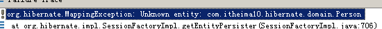
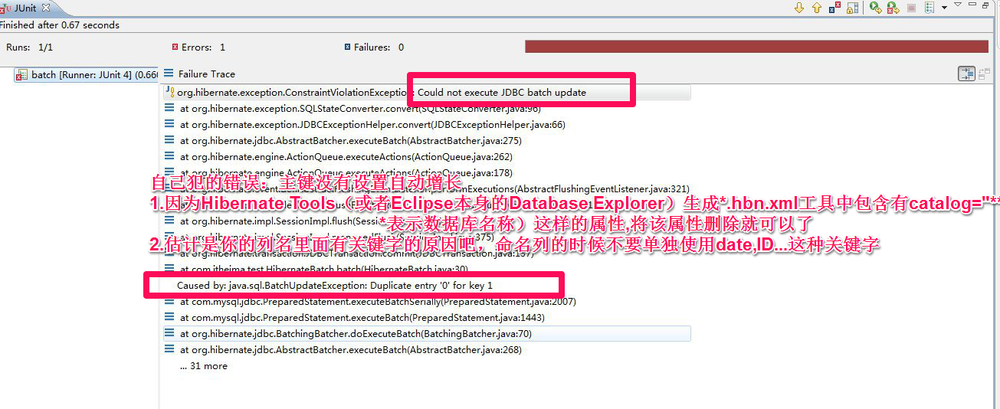

错误1

错误原因：
hibernate内部不知道Person类是一个持久化类，因为在映射文件中没有找到,
说明该类所在的映射文件没有放入到hibernate容器中

错误2


这两个错误结合，在hibernate的配置文件中把相应的映射文件加载了，但是class元素的
name属性的值写错了。
错误3

错误原因：
因为执行的是session.save方法，在hibernate内部应该拼接insert语句，利用java的反射机制得到持久化对象的属性的值(根据映射文件中property元素的name属性拼接而来的)
但是name属性的值和持久化中getter方法的名称不一致，所以拼接出来的getter方法是错误的。
错误4


错误原因：
Person类中的主键是Long类型，session.get方法的第二个参数的类型必须和主键的类型保持一致。
错误5


说明：
当执行session.get方法的时候，hibernate内部会调用java的反射机制创建一个person对象，利用的是默认的构造函数，所以一个持久化类中必须有一个默认的构造函数
错误6

错误原因：
主键的生成机制在映射文件中是assigned(通过程序的方式赋值)，但是在程序中并没有赋值。
错误7

在客户端执行hibernate的save操作的时候，主键的生成机制为identity(自动增长)，但是
数据库的这张表本身并不支持这个机制，所以会报错。


